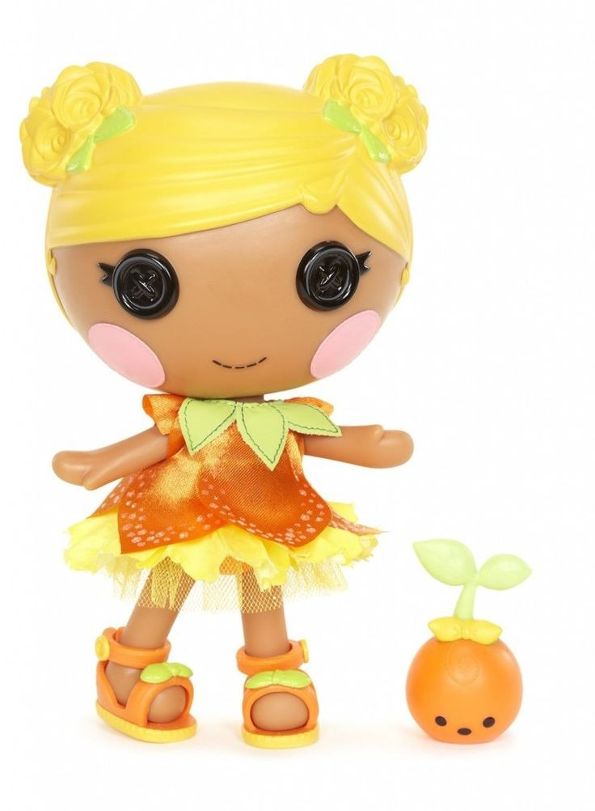

Posy tiene una piel bronceada, mejillas de color rosa pálido y los icónicos ojos negros de botón. Su cabello es rubio dorado y está peinado en dos moños laterales que simulan racimos de flores, sujetos con lazos de color melón. Viste un llamativo vestido naranja brillante que imita la forma de una flor cubierta de rocío, con capas inferiores de pétalos amarillo pastel y un cuello formado por hojas de menta. Sus sandalias son naranjas con detalles de hojas verdes, y siempre viaja acompañada por su mascota: un pequeño brote de planta de color naranja con una hoja verde.
